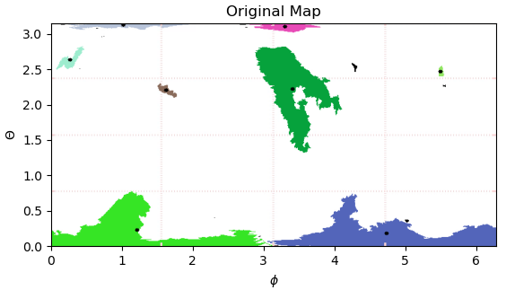
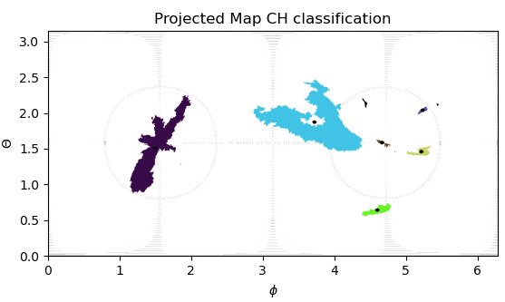

Coronal Hole Tracking Algorithm
Projections
The current images are in latitude longitude coordinates with the poles placed at the top and bottom of the image. In this current projection, clustering coronal holes at the poles is challenging due to the distortion near the poles. In order to overcome this issue, we suggest a coordinate mapping placing the poles at the equator. This transformation can be done in "projection.py" module.




Input: image dimensions (n_{\theta}, n_{\phi}), where \theta \in [0, \pi] and \phi \in [0, 2\pi].
-
Step 1: Convert to Cartesian coordinates (x,y,z). x = \rho \sin(\theta)\cos(\phi), y = \rho \sin(\theta)\sin(\phi), z = \rho \cos(\theta), where \rho = 1.
-
Step 2: Rotate about the x axis with \alpha = \pi/2.
-
Step 3: map back to spherical coordinates (\theta, \phi). \theta = \arccos(\frac{z}{\rho}) = \arccos(\sin(\theta)\sin(\phi)), \phi = \arctan(\frac{y}{x}) = \arctan(\frac{-\cos(\theta)}{\sin(\theta)\cos(\phi)}).
-
Step 4: find contours - save coronal holes.
-
Step 5: convert to Cartesian coordinates.
-
Step 6: Rotate about the x axis with \alpha = -\pi/2.
-
Step 7: map back to spherical coordinates (\theta, \phi).
-
Step 8: Save current coronal hole contour coordinates.
Centroid Tracking
Track coronal holes between frames based on the distance to the previous list of coronal hole centers.
Features saved to object:
- centroid pixel location (x,y)
- centroid physical location (phi, theta) - TODO.
- contour - pixel list.
- contour pixel area.
- contour physical area. - TODO
- coronal hole probability -temporal averaging -gaussian.
- contour arc length.
- bounding rectangle - straight and rotating.
January 18th notes - updates
the current tracking algortihm logic:
input = image dim (n_t, n_p)
step 1: convert to grayscale. step 2: convert grayscaled image to polar projection. step 3: find contours + save ch id + color assigned + match to previous frame. step 4: map back to lat-lon projection as rbg image. step 5: save the new contour pixels location. step 6: compute contour features (center, area, bounding box).